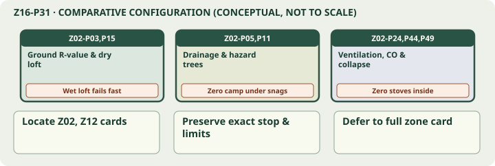

Z16-P31 · Field reference atlas · New manuscript
Shelter Insulation, Tarp Pitch, Ventilation and Condensation Index
Locate the original encyclopedia cards for shelter Insulation, Tarp Pitch, Ventilation and Condensation Index.
When it applies · Offline reference lookup. The linked chapter defines the situation, audience and limits.
Equipment · Offline reader or the complete linked source cards in print.

Actions
- Open Z02-P03 for make a dry insulated bed; Z02-P24 for control interior condensation with airflow and rainfly clearance.[A10, E04, E05]
- Open Z02-P05 for leave a drainage channel early; Z02-P11 for look up before stopping below trees; Z02-P49 for prevent drifting snow from sealing shelter exits and high vents overnight.[A10, E04, E13, E25]
- Read the linked card’s applicability, equipment and stop conditions together. Keep review and source limitations attached to any excerpt.[A10, ED]
Failure recognition · Acting on a keyword or title while overlooking an upstream exception or stop condition.[A10, ED]
Verify · Confirm the exact page ID and read the full conditions before using the reference.[A10, ED]
Stop or change course · If the situation falls outside a linked card’s conditions or its stop rule applies, stop using this index as a decision aid. Follow the full card and current local directions.[A10, ED]
Evidence and editorial notes
- A10 · FEMA / Ready.gov · Make a Plan (current web edition)
- Section: Offline reader navigation, historical lineage, and HOLD transparency · Conditions: Using the complete 16-zone offline archive, zone readers, and print proofs
Support: Navigation aids expose draft status, reconstruction lineage, open diagnostic photo needs, and pending specialist holds on every lookup path.
Limitations: This index entry does not independently establish any safety, regulatory or diagnostic instruction. · Conflicting evidence: None noted.
Editorial note: Index design and cross-reference policy. Substantive directions come from linked upstream chapter claims. · Specialist reviewer: Accessibility, print QA, and editorial reviewer
Primary source · checked 2026-11-24 - E04 · NWS · Flood Safety: Key Points for Camping and Hiking (agency PDF)
- Section: Before and during camping; know your surroundings · Conditions: Stream valleys and runoff channels subject to flash flooding
Support: Choose higher ground away from water channels. Rain far upstream can drive rapid flooding.
Limitations: Dry streambeds and gentle swales can flood rapidly without local rainfall. · Conflicting evidence: None; aligns with NWS-FLOOD.
Editorial note: Core hydrological exclusion rule for shelter placement. · Specialist reviewer: Emergency management and hydrology
Primary source · checked 2026-11-24 - E05 · NWS · What To Do If You're Caught in a Winter Storm (current web edition)
- Section: Outside and find shelter · Conditions: Cold, wet or windy winter conditions
Support: Block wind, stay dry and keep off cold ground. Keep exposure reduction separate from making a fire.
Limitations: Improvised windbreaks do not provide rated thermal protection or snow-load capacity. · Conflicting evidence: None; aligns with CDC-H.
Editorial note: Separates wind, ground, and moisture heat-loss pathways. · Specialist reviewer: Cold-weather shelter specialist
Primary source · checked 2026-11-24 - E13 · USDA Forest Service · Hazard Tree Safety (agency PDF)
- Section: What You Can Do to Reduce Risk · Conditions: Forest campsites and stops
Support: Look for dead trees and falling material. Stay away from hazardous trees and move away when winds make the site unsafe.
Limitations: Internal decay and root rot can cause live-looking trees to fail in saturated soils or high wind. · Conflicting evidence: Does not specify a universal exclusion radius; tree height and slope govern fall reach.
Editorial note: Prevents false precision on fall-zone distance while requiring overhead screening. · Specialist reviewer: Land management and arboriculture safety
Primary source · checked 2026-11-24 - E25 · FEMA / Ready.gov · Winter Weather (current web edition)
- Section: Winter Weather > Stay Safe During Winter Storms · Conditions: Extreme cold, drifting snow, and power or travel disruption
Support: Prepare layered clothing, emergency shelter/heat alternatives, and vehicle winter kits; stay indoors during blizzards, protect against frostbite/hypothermia, and keep exhaust vents and exits clear of drifting snow.
Limitations: Drifting snow can block tent vents, doors, and vehicle tailpipes silently overnight. · Conflicting evidence: None; reinforces overnight exit/vent clearance checks.
Editorial note: Supports snow-drift exit maintenance and winter shelter failure recognition. · Specialist reviewer: Cold-weather shelter and emergency management
Primary source · checked 2026-11-24
Source lineage · New manuscript (Z16 P20 equipment index) · Classification · New manuscript.